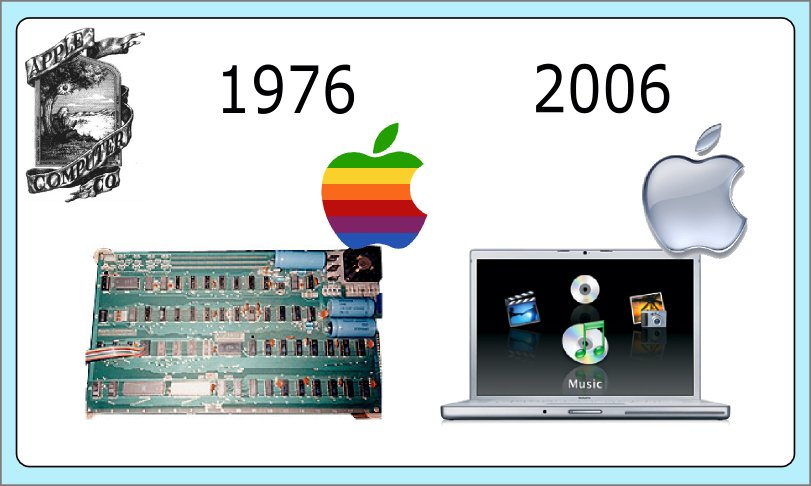

La compañia de la manzana cumplió ayer 30 años de vida.
Son muchas las webs dedicadas a la historia de esta compañia, asi que dejo como referencia su entrada en la wikipedia y la noticia publicada en engadget al respecto. Por lo visto, todo el mundo ha pensado en lo de los tres logos que ha tenido Apple a lo largo de sus historia, para ilustar la noticia.
